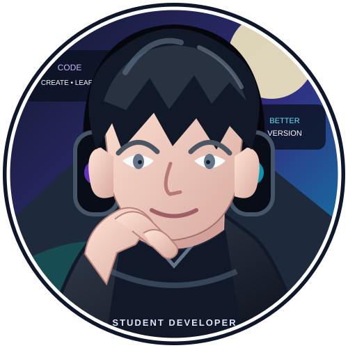
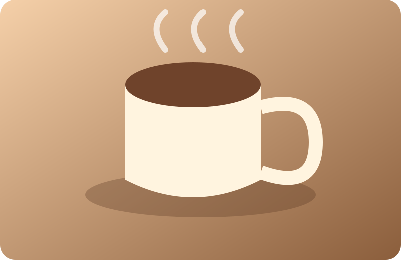
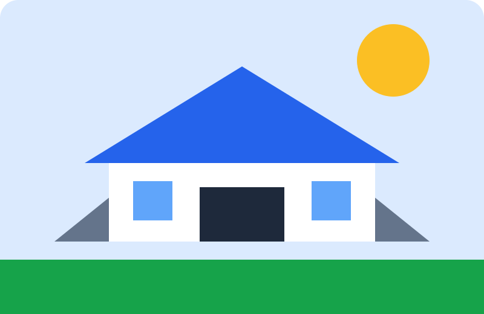
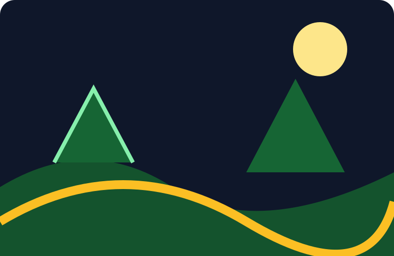

WEB DESIGN
Website portfolio
Thiết kế trang giới thiệu cá nhân với bố cục rõ ràng, responsive và hiện đại.
Tìm hiểu thêm →SINH VIEN CNTT • CREATIVE LEARNER
Mình đang học lập trình, thiết kế giao diện và xây dựng những sản phẩm web nhỏ có ích trong cuộc sống.

01 / ABOUT ME
Một người trẻ yêu thích công nghệ, thích tự tay tạo ra sản phẩm và luôn muốn tiến bộ từng ngày.
Học lập trình không chỉ là viết code. Đó còn là quá trình học cách suy nghĩ, giải quyết vấn đề và kiên trì với những lỗi sai.
Hiện tại, mình tập trung vào kiến thức nền tảng của ngành Công nghệ thông tin: lập trình C++, cấu trúc dữ liệu, thiết kế giao diện và xây dựng website.
Mình tin rằng mỗi dự án nhỏ đều là một cơ hội để thực hành. Vì vậy, blog này là nơi mình ghi lại quá trình học tập, những điều đã làm và mục tiêu sắp tới.
02 / SKILLS
Các thẻ kỹ năng được sắp xếp dạng lưới và có hiệu ứng khi di chuột.
03 / PROJECTS
Một vài bài tập và sản phẩm mình đã thực hành trong quá trình học.
Thiết kế trang giới thiệu cá nhân với bố cục rõ ràng, responsive và hiện đại.
Tìm hiểu thêm →
Xây dựng giao diện giới thiệu món uống, hình ảnh và thông tin sản phẩm.
Tìm hiểu thêm →
Ý tưởng trang hướng dẫn sinh viên với các khu vực thông tin trực quan.
Tìm hiểu thêm →04 / MY JOURNEY
Những cột mốc nhỏ tạo nên quá trình trưởng thành của mình.

Học cách sử dụng biến, điều kiện, vòng lặp và hàm trong C++.
Thực hành HTML, CSS, selector, flexbox, grid và responsive.
Kết hợp kiến thức đã học để tạo website có cấu trúc và giao diện hoàn chỉnh.
Cải thiện tư duy giải thuật, làm nhiều dự án và làm quen với JavaScript.
05 / ARTICLES
Một số chủ đề mình muốn ghi lại trong quá trình học.
Bắt đầu từ selector, box model, màu sắc, khoảng cách và cách tổ chức file CSS để dễ bảo trì.
Đọc tiếp →Một portfolio tốt cần có thông tin ngắn gọn, bố cục dễ đọc và những dự án thể hiện quá trình tiến bộ.
Đọc tiếp →Chia mục tiêu lớn thành các bước nhỏ, ghi chú lỗi sai và dành thời gian ôn tập hợp lý.
Đọc tiếp →06 / CONTACT
Nếu bạn muốn trao đổi về lập trình, thiết kế web hoặc một ý tưởng dự án, hãy liên hệ với mình.